Zelda Challenge: Outlands
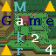 The Thunderbird, a horrible guardian encountered by Link in the Great Palace of Zelda 2, has somehow survived and is out for revenge. Having lost the Triforce of Courage at the hands of its adversary, it has stolen the Triforce of Power and flown to the vast neighbor of Hyrule, the Outlands. In a world similar to yet completely different from Zelda 1, Link must track down the captured Tetrarch Fairies and, with their help, break open Ganon's secret golden vault where the creature now resides. Link will face dangers and traps unlike anything Ganon had ever devised. His adventure will span 18 new dungeons hidden within a completely unfamiliar terrain. Zelda herself will make appearances to help the hero, providing items and sage advice crucial to the new journey. Link has become very skilled in his familiar world of Hyrule, but skill alone is his only advantage -- the land of the Outlands is a beautiful yet deadly world bearing no resemblence to his own cherished kingdom.
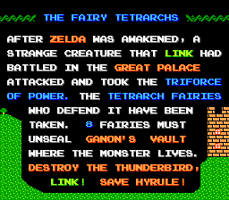
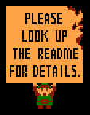 The Overworld 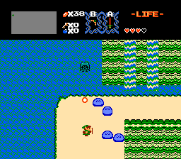 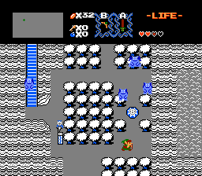 The locations of secrets, such as dungeon entrances, shops, and residents with clues are changed. Thought you knew which screen to find Level 1 on? Think again! Even the 4 shortcuts (found by pushing rocks) are in new places! And when Link exits these caves and structures, he doesn't just pop out onto the places where the old caves used to be. New exit coordinates have been set to reflect the new passages. 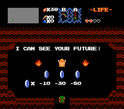 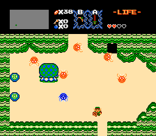 Secrets are now locked according to what quest you're playing. For example, the rock you push to find a dungeon won't move on the second quest, so you have to find a new entrance somewhere else in the world. The game allows each secret to be set to 1st Quest, 2nd Quest, both, or neither. So, many places where you can bomb, burn, push things and use the recorder are quest-specific. 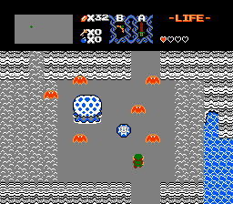 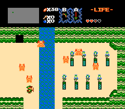 The "waves" sound effect has been moved to a new beach on the opposite side of the overworld. Each of the shops sell new combinations of items, including the bow and the white sword. The prices of all items have also been changed. 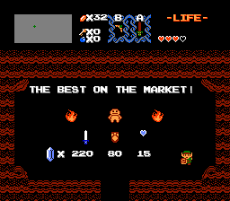 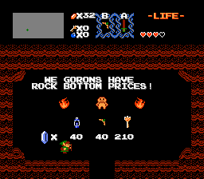 The monsters are distributed differently now, sometimes even with new graphics to trick the player. You might find red bats that cannot be hurt unless they stop moving, because they're really those flying flower creatures. There are new places to find fairies, though a few of the ponds are far from convenient to visit. The monsters may simply appear (poof!) or walk in from the sides, depending on the new terrain. Most of the monsters have new graphics (including all bosses) and some even have new colors. 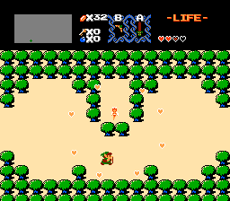 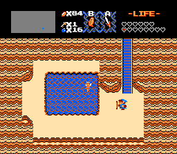 The screens where you can wake up a statue to reveal a stairway have been changed, as have the locations where the recorder can open passages. And whenever the recorder doesn't open passages, magic dust (like Zelda 64) will wisk you to a different location. The stepladder can be used in new places, and not on the screens where you used to use it. 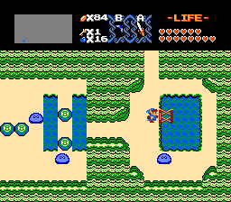 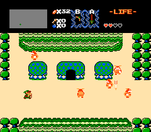 The Underworld There are 42 possible block, water & statue arrangements for the many dungeon rooms, and all but 3 are brand new. Examples of the old "rooms" include the entrance with the many statues, one with a horizontal river across the top half, boss rooms, the Triforce room, and many others. The usage of all these rooms in dungeons is also different. 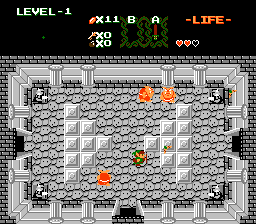 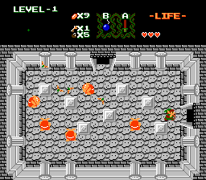 The other aspect of designing new dungeons lies with the four directions of each room. It's possible to control which are always open, which slam shut when you enter, which are locked, which can be bombed open, which are false walls, which are false walls that play a tune when you pass through them, and which are real walls. As for the gates that shut behind you, sometimes they will open again when the monsters are all defeated, and sometimes by some other means. And then there are gates that close behind you and never open again, which are great for one-way passages. 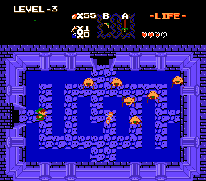 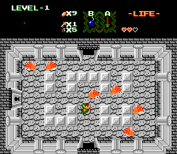 Each dungeon has its own new color scheme. The new palettes give the underworld an entirely new atmosphere... Even some of the monsters (including bosses) have new colors. 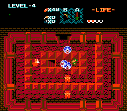 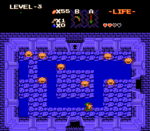 The game allows for any item to show up in any dungeon room. Will there be bombs, or 5 rupees, or a heart container? The items are distributed in a totally new manner. 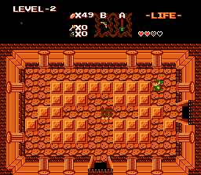 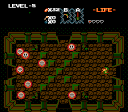 In ZeldaC, the old man has been replaced by Zelda; now she will be the one giving you advice in dungeons, as well as occasional items! Just don't hit her or she will shoot back! And no, you won't be rescuing her in the last dungeon... 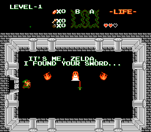 Each of the dungeons in ZeldaC has a map that can be displayed in the upper left corner of the screen. No matter the shape or appearance of the underworld maze, the map represents it accurately (except for certain hidden rooms). Just like in the original game, Link is able to draw out the parts of the labyrinth he has actually visited, without data from the original game's maps interfering. If the compass is found, it will point out exactly where the captive Tetrarch fairy is with respect to Link's position. 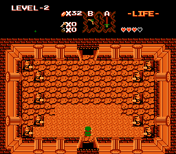 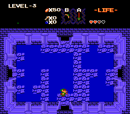 Stairs can be pointed to other stairs, or to side-view item rooms, and can be associated with any of the regular dungeon rooms. The items in the item rooms can be changed to different items, and items can even be placed in tunnel rooms! Also, it's possible to control exactly where Link appears in any given room after exiting a side-view room. 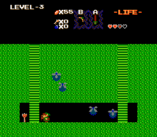 Download Options This version is the same as the "first and final"
release, except with necessary changes made to it.
A list of bugs fixed is included. "ZeldaC Full" (550 k) - Both .ips and .exe patches are included. The zipped instruction booklet, manual.zip, is inside this zip file. "ZeldaC Lite" (54.5 k) - Both .ips and .exe format patches are included. No instruction booklet. "ZeldaC Manual" (495 k) - ONLY the instruction booklet. No patches here. Reference Area
Hints and Reminders - This is a short, humorous document written by ChibiDelenn. Though it might seem vague at times, it may trigger an idea for uncovering something you're searching for in the game. Best of all, it's spoiler-free! ZeldaC FAQ - This is list of questions and answers I've compiled. There are plenty of other questions one could ask, but these are the most common. Don't read any of its entries unless you're hopelessly stuck! Zelda ROM Locations - Hacking Zelda 1? Writing an editor? Here's my list of ROM data locations. Zelda Upper-Corner Maps - Hacking Zelda 1 dungeons? Here's how to make new collectible maps. Questions? Feedback? Hints? Write to me! Return to the Site Menu. This site is not affiliated with nor endorsed by Nintendo in any way.
|